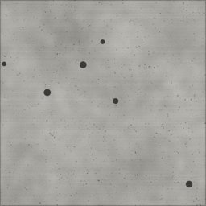

← All scout pages · Public copy, pages as of 2026-10-16 23:41. A Poly Haven prospect shows our own copy of its CC0 colour map, flat and unlit (Poly Haven’s previews are not CC0; its page has the lit one). The offline 3D viewer stays on the owner’s machine.
Paving and roads scout — CC0 prospects
Every row in the Shape gallery's Paving and roads category that is code-drawn or flagged OUTLIER, with up to three CC0 prospects from Poly Haven and ambientCG. Real photos are preferred; a generated (computer-made) set is listed only when neither library has a photo of that look, and it is marked. Built 2026-10-16 by scout paving. The rows under “Pulled” at the bottom were downloaded at full size on your word; the rest of the page changes nothing in the game.
3D: an ambientCG prospect's picture opens ambientCG's own 3D preview; a Poly Haven prospect's page has its 3D preview. Our offline viewer of the game's own maps is not on this public copy.
0rows still to choose (of 4 scouted, 9 in Paving and roads)
0with at least one prospect
0with a real-photo prospect
0generated only
4pulled, awaiting your review
Left out: Asphalt with lane markings (code-drawn from drawn by code: dino_game_rnd/surface_gen/gen_paving_asphalt_with_lane_markings.py, not an outlier), Asphalt, cracked (code-drawn from drawn by code: dino_game_rnd/surface_gen/gen_paving_asphalt_cracked.py, not an outlier), Asphalt, weathered (code-drawn from drawn by code: dino_game_rnd/surface_gen/gen_paving_asphalt_weathered.py, not an outlier), Brick paver (code-drawn from drawn by code: dino_game_rnd/surface_gen/gen_paving_brick_paver.py, not an outlier), Cobble road (code-drawn from drawn by code: dino_game_rnd/surface_gen/gen_paving_cobble_road.py, not an outlier).
Pulled, awaiting your review (4)
Rows where you chose a candidate and it was downloaded. Each one is in the Shape gallery's Under Review lane and the lighting lab; your pick is marked. A rejected one comes back up to the main list.
01
Asphalt, fresh
paving_asphalt_fresh
Now in the game code-drawn drawn by code: dino_game_rnd/surface_gen/gen_paving_asphalt_fresh.py Thumbnail: the game's drawn picture
Pulled 2026-10-16. Under review — in the Shape gallery's Under Review lane and on the lighting lab's UNDER REVIEW building. Say approve or reject with the look's name. Lighting lab sheet (on the owner’s machine only).
Photos of dark, fine-grained new tarmac. asphalt_track is the darkest and most even, like ours; clean_asphalt is dark grey with a faint seam; asphalt_pit_lane shows a little more aggregate.
The picture opens our 3D viewer — under review for paving_asphalt_fresh (on the owner’s machine only)
02
Concrete sidewalk
paving_concrete_sidewalk

Now in the game code-drawn drawn by code: dino_game_rnd/surface_gen/gen_paving_concrete_sidewalk.py Thumbnail: the game's drawn picture
Pulled 2026-10-16. Under review — in the Shape gallery's Under Review lane and on the lighting lab's UNDER REVIEW building. Say approve or reject with the look's name. Lighting lab sheet (on the owner’s machine only).
concrete_pavement_02 is square sidewalk slabs with shallow joints; brushed_concrete_04 is broom-finished concrete with a joint (also a Concrete-page prospect); concrete_pavement_03 checkerboard sidewalk panels.
Now in the game code-drawn drawn by code: dino_game_rnd/surface_gen/gen_paving_dirt_track.py Thumbnail: the game's drawn picture
Pulled 2026-10-16. Under review — in the Shape gallery's Under Review lane and on the lighting lab's UNDER REVIEW building. Say approve or reject with the look's name. Lighting lab sheet (on the owner’s machine only).
dirt_floor has our dry orange-brown earth; dry_ground_rocks brown earth with small stones; muddy_tracks is dirt with tyre ruts.
Now in the game code-drawn drawn by code: dino_game_rnd/surface_gen/gen_paving_gravel_road.py Thumbnail: the game's drawn picture
Pulled 2026-10-16. Under review — in the Shape gallery's Under Review lane and on the lighting lab's UNDER REVIEW building. Say approve or reject with the look's name. Lighting lab sheet (on the owner’s machine only).
rocky_trail is a compacted grey-brown gravel track; floor_pebbles_01 tan earth with fine gravel; Gravel041 loose tan-grey gravel.

 CC0 colour map · our copy
CC0 colour map · our copy